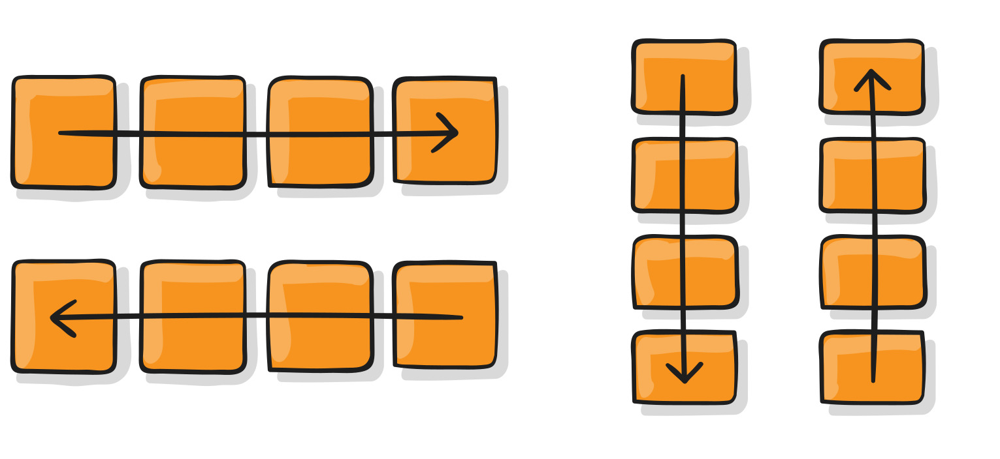

Flexbox es un modelo unidimensional de layout y un método que puede ayudar a distribuir el espacio entre los ítems de una interfaz y mejorar las capacidades de alineación.
esta propiedad especifica como los elementos hijos(flex-items) estaran ubicados en su contenedor padre (flex-container)
flex-direction: row; flex-direction: row-reverse; flex-direction: column; flex-direction: column-reverse;
